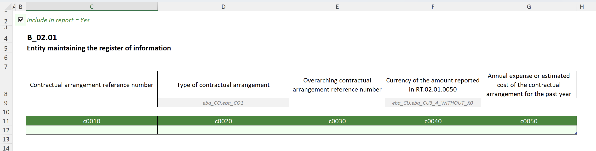
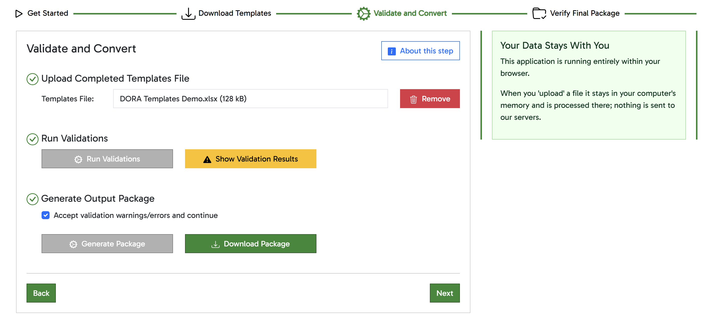
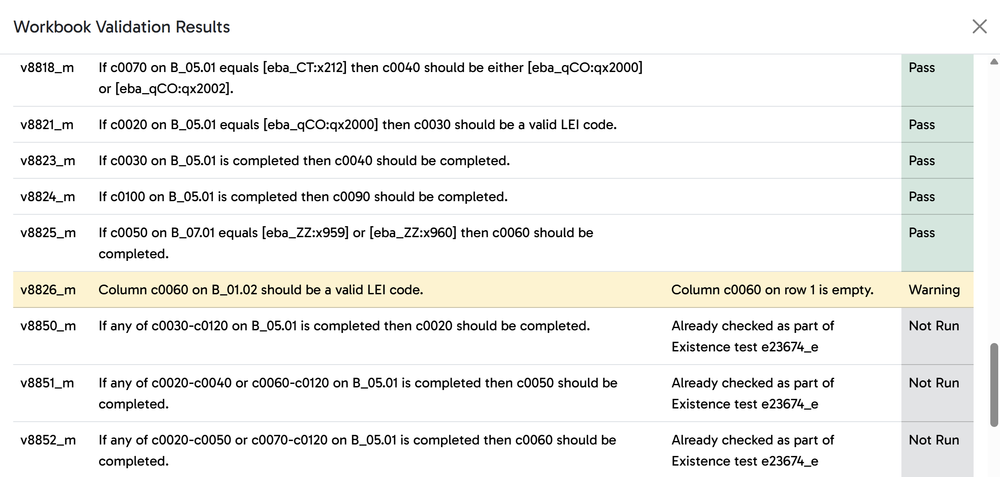

DORA Register of Information XBRL reporting went live on 31 March 2025 and the next reporting date is 31 December 2025.
Our simple and secure Excel-based product allows you to comply with the requirements with minimal friction.
Easy-to-use guided approach
When you access our DORA reporting tool through your browser, you're presented with a very easy to follow workflow to get you from start to finish. If you can book a flight, you can use our software.
After downloading the template file, it's over to Excel to fill in your data.
The template file is a native Excel file and can easily be completed using either an installed version of Excel or by using Excel in the browser if you have a Microsoft 365 subscription.


To run validations on your completed template file and convert it to the final XBRL-CSV output package, you simply upload the template file into your browser and press the relevant button.
When you upload your template file, it stays in your browser's memory and nothing is sent to our servers.
Even if you have validation warnings or errors, you can still generate the XBRL-CSV output package.
If you do need to revisit your data due to issues highlighted during validation, then you'll find the validation results easy to follow.
With the validation results in your browser, it easy to have the results visible at the same time as your template file to allow you to easily make any required adjustments.

What you can expect from Olive Octagon
Performance
We're confident that our software is among the fastest and most reliable on the market.
Data Security
With no software to install and your data staying on your computer, you can't get much better data security.
Responsive Support
We're always available to help if you're having problems or have any questions.
Fair and Clear Pricing
The licence fee is low and predicatble to minimise any potential procurement headache.
Pricing
Our pricing is very competitive and we don't feel the need to hide our prices behind "contact us to discuss" opacity.
Other companies may be able to provide a cheaper solution, but we're confident that nobody can deliver the same quality of product and service for a lower price.
Pricing is an annual fee based on the number of reporting entities, not the number of users.
Zero onboarding costs.
Support (and of course updates) included.
€600
Fixed renewal increases of 4% per year so there will be no surprises.
Next steps
If you would like more information, or full access to the software on a trial basis, then contact us using the form at the bottom of this page.
More detail on DORA Register of Information reporting
We have a news article that gives a good introduction to what the DORA reporting obligations are and some brief discussion around DORA reporting timelines. In addition to this, here are some key snippets of latest DORA reporting news.
Reporting Framework 4.2 is due for release soon, and this will be the framework to use from 31 December 2025 onwards. This will largely be a consolidation of previous releases but there may be some minor changes that reporters will need to be aware of.